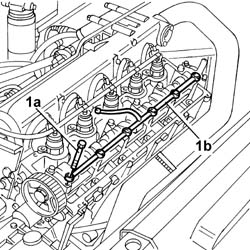

1084B50 Oil supply pipe to timing supports
- Path
- Procedures > 10 ENGINE > 1084 ENGINE LUBRICATION > 1084B ENGINE OIL LUBRICATION CIRCUIT > 1084B50 Oil supply pipe to timing supports
- Kind
- repair procedure (removal / refitting; the operation number is the code)
- Applies to
- engines: 2.4 JTD 10V; all production periods
- Interactive page
- https://sloeber94.github.io/elrnDB-lThss/en/#/105146
Applies to: all engines; all production periods
 Removing
Removing
 Refitting
RefittingSee in Op. 1016A10
See in Op. 1016A20
1. Undo the fixing bolts (1a) and remove the oil supply pipe (1b) to the camshaft supports.

Applies to: all engines; all production periods
Refitting
Removing- Fit the oil supply pipe and tighten the fixing bolts to torque.
 | Value - daNm | Fastening | Component | Ø |
|---|---|---|---|---|
. | 1.5 | Bolt | CAMSHAFT CAPS | M7 |
See in Op. 1016A20
See in Op. 1016A10